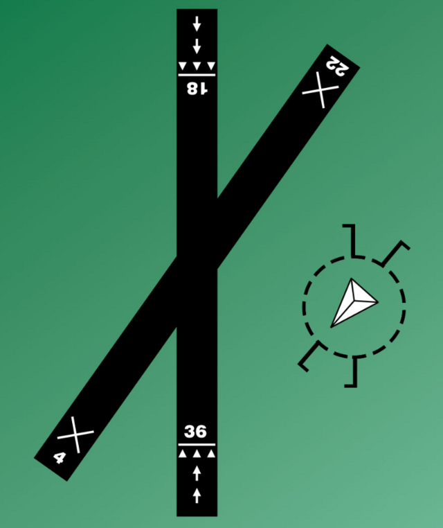
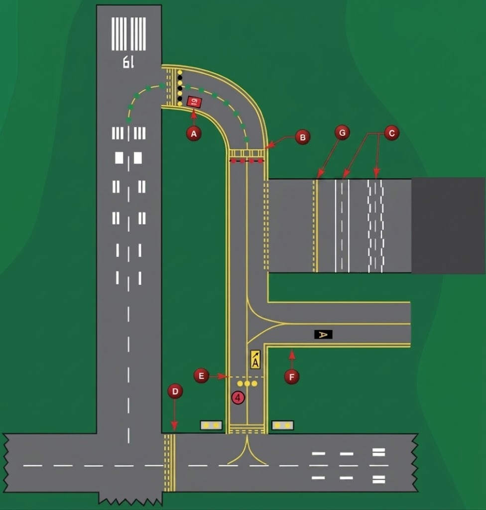
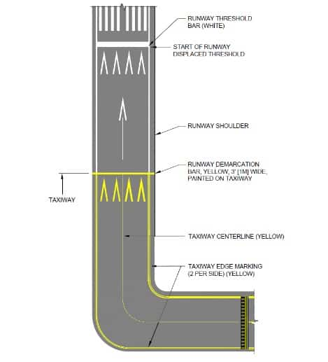
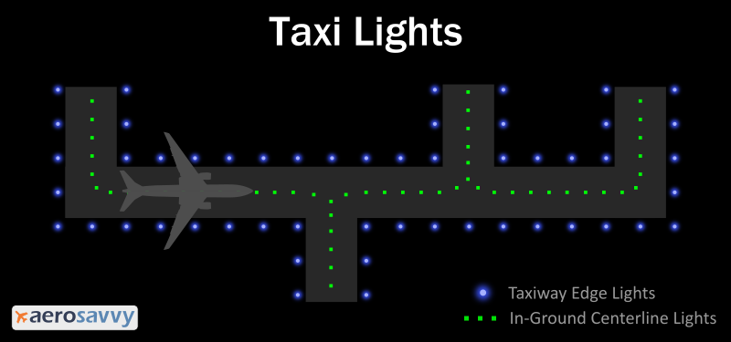

Airports & Operations
Flying the pattern, reading runways and signs, the glidepath lights, and what makes an approach "stabilized."
The traffic pattern
The standard pattern is left traffic (all turns to the left). Enter the downwind at a 45° angle at pattern altitude (typically 1,000 ft AGL).
Which runway? Take off and land into the wind — the windsock points the way.
Some fields use a landing direction indicator (tetrahedron) instead of, or alongside, a windsock:

Hold aileron into the wind — the aileron on the upwind wing deflects up (add more as the wind picks up). At touchdown, keep the longitudinal axis aligned with your direction of travel so you don't side-load the gear.
Runway numbers & signs
- Runway numbers come from the runway's magnetic heading with the last digit dropped (Runway 22 ≈ 220° magnetic). The opposite end differs by 18 (e.g. 22 / 04).
- Taxiway exit signs are on the same side of the runway as the exit they mark.
Ground may tell you to hold short of a runway (stop at the hold-short markings). LAHSO = Land And Hold Short Operations — land and stop before an intersecting runway/point. Minimum visibility for LAHSO is 3 SM, and student pilots should not accept a LAHSO clearance.
If you are not departing from the very beginning of a runway (an intersection departure), you must tell ATC your runway location (e.g. "at Alpha 5").
Other surface markings and signs you'll see while taxiing:

- B — Surface hold-position sign.
- C — Vehicle roadway markings.
- D — Non-movement area boundary marking.
- E — Intermediate holding-position marking — where you stop and hold short of an intersecting taxiway.
Threshold & demarcation bars

- Displaced threshold — white arrows down the centerline leading to the threshold bar. The pavement before it is usable for taxi, takeoff, and landing rollout — but not for landing.
- Blast pad / stopway — yellow chevrons. Not usable for taxi, takeoff, or landing.
- Demarcation bar — yellow, ~3 ft wide. Separates a non-runway surface (blast pad or taxiway) from a displaced threshold; yellow marks that it's not landing surface.
- Threshold bar — white, ~10 ft wide. Marks the actual start of the runway available for landing.
Taxiing
With a tailwind, hold the elevator down (yoke forward) so the wind presses the tail down instead of getting under it and lifting. With a headwind, turn the aileron into the wind (yoke toward it).

Glidepath lights: PAPI vs VASI
PAPI = a row of 4 lights; VASI = two bars (near + far rows of lights). Both show if you're on the visual glidepath.
On a runway served by a VASI, you must stay at or above the glide slope until a lower altitude is needed for a safe landing.
A stabilized approach = a constant descent angle to the runway (about 3°), with stable airspeed and configuration — flown to reduce pilot workload. Hold the landing speed in the POH/AFM, within +10 / −5 KIAS.
Soft-field landing: fly the same approach speed as a normal landing — the soft-field technique is all in the touchdown (hold the nosewheel off), not the approach.
Short-field landing in gusty wind: add half the gust factor to the approach speed (e.g. wind 15 gusting 25 → add 5 kt).
Pilot-controlled lighting
At many non-towered fields you switch the runway lights on yourself by keying the mic on the published CTAF. Always key 7 times first to turn them on at full brightness, then dial down if you want.
| Mic clicks (within 5 s) | Brightness | What you get |
|---|---|---|
| 7 clicks | Brightest — and turns the lights on | |
| 5 clicks | Medium intensity | |
| 3 clicks | Lowest intensity |
Wake turbulence
Every aircraft trails wingtip vortices that can roll a smaller aircraft. They're strongest when the aircraft ahead is heavy, clean, and slow.
They sink (a few hundred ft/min) and drift downwind. A light quartering tailwind is the worst case — it can hold the upwind vortex over the touchdown zone.
Landing behind a larger aircraft
Stay at or above its flight path and land beyond its touchdown point.
Departing behind a larger aircraft
Lift off before its rotation point and climb above its path; turn to avoid its wake.
Allow 2 minutes after a larger aircraft's takeoff or low approach (about 3 minutes for an intersection takeoff behind one).